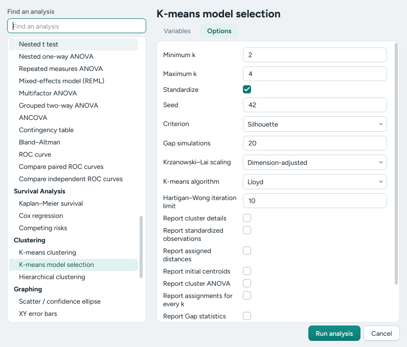
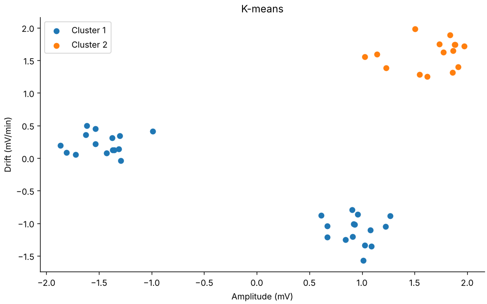
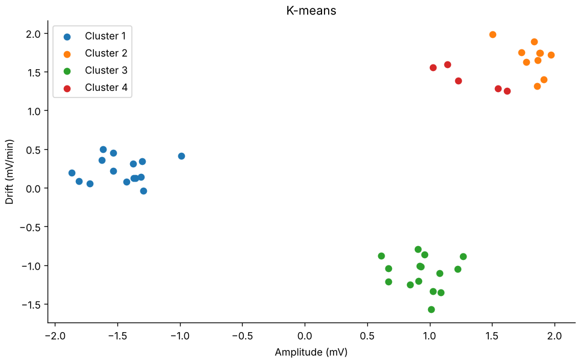
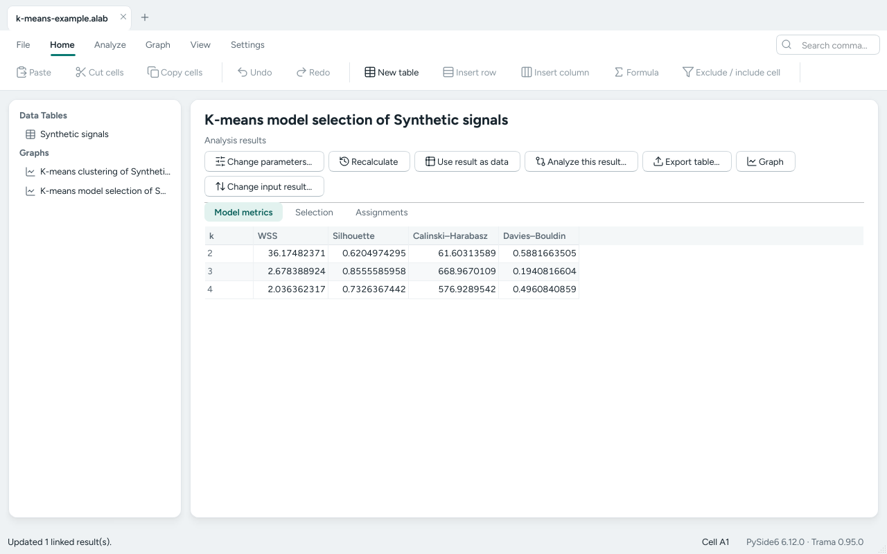
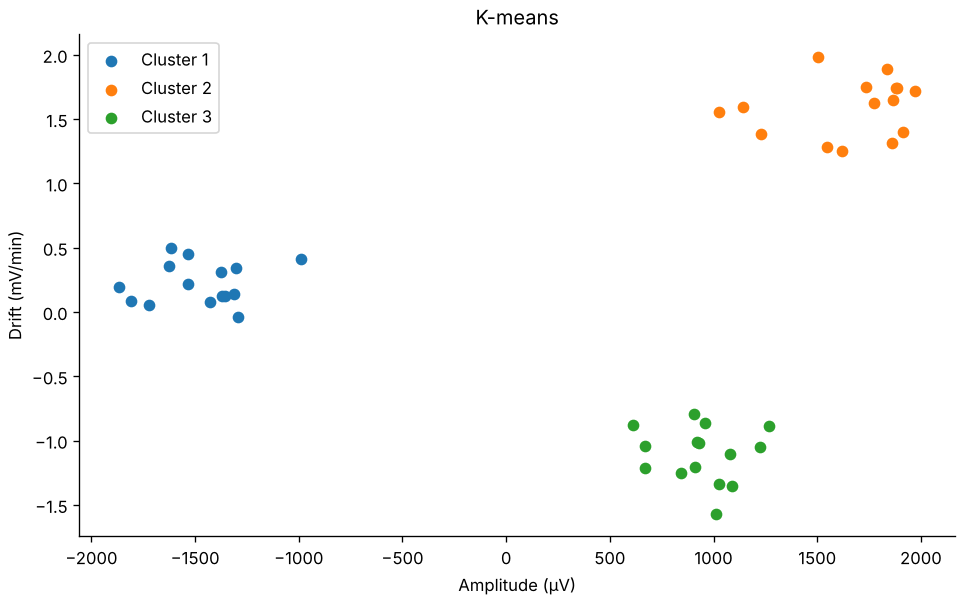

GuideStatisticsK-means
Choose the number of clusters with K-means
You measured the amplitude and drift of 45 signals and suspect they belong to a few families. How many clusters do the data really support, and how far can you trust the answer?
- Checked on Trama 0.95.0 beta
- Data 45 synthetic signals
- Seed 42
- Reading 7 minutes
When to use it
K-means assigns every observation to one of k clusters and moves the centres until the sum of squared distances from each point to its own centre, the WSS, stops going down. It works well with numeric measurements and compact clusters of similar shape and size.
Before reading the clusters, check three things, because each one can change the answer:
- The scale of the variables. Distances add the variables as they are: the one with the largest numbers dominates. With different units, turn on Standardize. The edge case below shows what happens otherwise.
- Outliers. A point far from the rest can take a cluster all for itself.
- Initialisation. In Trama, Lloyd’s algorithm starts 10 times from centres chosen with k-means++ and keeps the solution with the lowest WSS. The Seed makes the sequence repeatable.
K-means always returns k clusters, even when the data have none. Comparing several values of k is how you find out whether the structure is there.
The data
A Multiple variables table with one row per signal and two numeric columns: Amplitude (mV) and Drift (mV/min). No missing values. If a row has a blank in one of the chosen variables, Trama leaves it out of the calculation.
| Amplitude (mV) | Drift (mV/min) |
|---|---|
| −1.5351 | 0.4488 |
| −1.3544 | 0.1264 |
| −1.2954 | −0.0400 |
| … 42 more rows | |
In Trama
- Open the project with File → Open…, or bring in the CSV with File → Import into project….
- Select the table Synthetic signals and choose Analyze → Analyze… (Ctrl+Shift+A).
- In the list of analyses open Clustering → K-means model selection. On the Variables tab tick both columns.
- On the Options tab set the values in the table below and press Run analysis.
- To see the partition repeat with K-means clustering, 3 clusters, same variables, scaling and seed. Both analyses are already set up in the attached project.
| Minimum k · Maximum k | 2 · 4 |
|---|---|
| Standardize | on |
| Seed | 42 |
| Criterion | Silhouette |
| K-means algorithm | Lloyd (default) |
Show the Options tab screenshot

Read the result
The metrics are on the Model metrics tab of the results and the choice on the Selection tab, in the Suggested k row.





| k | WSS | Versus k − 1 | Mean silhouette |
|---|---|---|---|
| 2 | 36.17 | −58.9% | |
| 3 | 2.68 | −92.6% | |
| 4 | 2.04 | −24.0% |
With a single cluster the WSS is 88.00: with two standardised variables and 45 rows it is 2 × 44. Full-precision values are in the proof JSON.
From two to three clusters the WSS collapses from 36.17 to 2.68: the third centre separates two families that stayed together with k = 2. From three to four it only drops to 2.04, and the mean silhouette falls from 0.856 to 0.733, because the fourth centre cuts a compact family in two. On these data Trama suggests k = 3.
The silhouette of a signal compares a, its mean distance to the other members of its cluster, with b, its mean distance to the members of the nearest other cluster: s = (b − a) / max(a, b). It ranges from −1 to 1. A mean close to 1 means compact, well-separated clusters. Trama computes it on the same standardised variables used for the fit.
Show the Model metrics table screenshot

The unit of measurement decides for you
Express amplitude in µV instead of mV, that is with numbers a thousand times larger, and turn off Standardize. Distances now depend almost only on amplitude. The silhouette suggests 2 clusters (0.844 against 0.787 with k = 3). With k = 3, three signals from the top-right family end up with the bottom-right ones, which have a similar amplitude but opposite drift.



How to notice. The choice of k changes when you change units; clusters are cut along a single axis; columns span ranges of different orders of magnitude. With Standardize on, the results are identical to the mV ones.
What to report
- Variables and units, excluded rows and how missing values were handled.
- Standardisation, algorithm and number of starts, seed.
- Range of k tried, selection criterion and the value obtained.
- Trama version and the
.alabproject that repeats the calculation.
Amplitude and drift were standardised and clustered with K-means (Lloyd’s algorithm, 10 k-means++ starts, seed 42) for k from 2 to 4 in Trama 0.95.0 beta. The mean silhouette was highest with k = 3 (0.856, against 0.620 with k = 2 and 0.733 with k = 4).
An exploratory partition is not a classification. Before using the clusters to assign new samples, look for independent support: another set of measurements, a variable not used for clustering, another method.
Sources
- Lloyd S. P. (1982). Least squares quantization in PCM. IEEE Transactions on Information Theory, 28(2), 129–137. doi:10.1109/TIT.1982.1056489
- Arthur D., Vassilvitskii S. (2007). k-means++: the advantages of careful seeding. Proceedings of the 18th ACM-SIAM Symposium on Discrete Algorithms, 1027–1035. ACM Digital Library
- Rousseeuw P. J. (1987). Silhouettes: a graphical aid to the interpretation and validation of cluster analysis. Journal of Computational and Applied Mathematics, 20, 53–65. doi:10.1016/0377-0427(87)90125-7
- Tibshirani R., Walther G., Hastie T. (2001). Estimating the number of clusters in a data set via the gap statistic. Journal of the Royal Statistical Society B, 63(2), 411–423. doi:10.1111/1467-9868.00293
Checked with Trama 0.95.0 beta (tag v0.95.0, commit 4c07db6) on 20 November 2026. Calculation in analisi/stats.py and analisi/advanced.py.